Last updated: 2025-05-28
Checks: 6 1
Knit directory: Getting_started/
This reproducible R Markdown analysis was created with workflowr (version 1.7.1). The Checks tab describes the reproducibility checks that were applied when the results were created. The Past versions tab lists the development history.
Great! Since the R Markdown file has been committed to the Git repository, you know the exact version of the code that produced these results.
Great job! The global environment was empty. Objects defined in the global environment can affect the analysis in your R Markdown file in unknown ways. For reproduciblity it’s best to always run the code in an empty environment.
The command set.seed(20240712) was run prior to running the code in the R Markdown file. Setting a seed ensures that any results that rely on randomness, e.g. subsampling or permutations, are reproducible.
Great job! Recording the operating system, R version, and package versions is critical for reproducibility.
Nice! There were no cached chunks for this analysis, so you can be confident that you successfully produced the results during this run.
Using absolute paths to the files within your workflowr project makes it difficult for you and others to run your code on a different machine. Change the absolute path(s) below to the suggested relative path(s) to make your code more reproducible.
| absolute | relative |
|---|---|
| /project/xuanyao/jiaming/Getting_started | . |
| /project/xuanyao/jiaming/Getting_started/data/Morris/program_data_nature_cNMF/gene_module_index_matrix.rds | data/Morris/program_data_nature_cNMF/gene_module_index_matrix.rds |
| /project/xuanyao/jiaming/Getting_started/data/Morris_adjusted/program_data/grna_target_data_frame_omit.rds | data/Morris_adjusted/program_data/grna_target_data_frame_omit.rds |
| /project/xuanyao/jiaming/Getting_started/data/Morris_adjusted/program_data/discovery_pairs_cis.rds | data/Morris_adjusted/program_data/discovery_pairs_cis.rds |
| /project/xuanyao/jiaming/Getting_started/output/Morris/remove_cis_match_grna/4_cov_high_expressed_gene/cNMF_10000_wilcox_no_approx_sceptre_perturbation_gene_remove_with_bug/resample_normal_test_statistics.csv | output/Morris/remove_cis_match_grna/4_cov_high_expressed_gene/cNMF_10000_wilcox_no_approx_sceptre_perturbation_gene_remove_with_bug/resample_normal_test_statistics.csv |
| /project/xuanyao/jiaming/Getting_started/output/Morris/sceptre_all_pairs/author_threshold_updated/results_run_discovery_analysis.rds | output/Morris/sceptre_all_pairs/author_threshold_updated/results_run_discovery_analysis.rds |
| /project/xuanyao/jiaming/Getting_started/output/Morris/sceptre_all_pairs/author_threshold_updated/results_run_calibration_check.rds | output/Morris/sceptre_all_pairs/author_threshold_updated/results_run_calibration_check.rds |
| /project/xuanyao/jiaming/Getting_started/output/Morris/debug/cNMF_10000_wilcox_no_approx_sceptre_perturbation_gene_remove/NB_1000_test_statistics | output/Morris/debug/cNMF_10000_wilcox_no_approx_sceptre_perturbation_gene_remove/NB_1000_test_statistics |
| /project/xuanyao/jiaming/Getting_started/output/Morris/remove_cis_match_grna/4_cov_high_expressed_gene/cNMF_10000_wilcox_no_approx_sceptre_perturbation_gene_remove_/resample_normal_test_statistics.csv | output/Morris/remove_cis_match_grna/4_cov_high_expressed_gene/cNMF_10000_wilcox_no_approx_sceptre_perturbation_gene_remove_/resample_normal_test_statistics.csv |
| /project/xuanyao/jiaming/Getting_started/output/Morris/remove_cis_match_grna/4_cov/cNMF_3000_skew_t_approximation/resample_normal_test_statistics.csv | output/Morris/remove_cis_match_grna/4_cov/cNMF_3000_skew_t_approximation/resample_normal_test_statistics.csv |
| /project/xuanyao/jiaming/Getting_started/output/Morris/remove_cis_match_grna/4_cov/cNMF_50000_no_approximation_replace_previous/resample_normal_test_statistics.csv | output/Morris/remove_cis_match_grna/4_cov/cNMF_50000_no_approximation_replace_previous/resample_normal_test_statistics.csv |
| /project/xuanyao/jiaming/Getting_started/output/Morris/remove_cis_match_grna/4_cov_t_test/cNMF_10000_no_approx_pooled_rank_t/resample_normal_test_statistics.csv | output/Morris/remove_cis_match_grna/4_cov_t_test/cNMF_10000_no_approx_pooled_rank_t/resample_normal_test_statistics.csv |
Great! You are using Git for version control. Tracking code development and connecting the code version to the results is critical for reproducibility.
The results in this page were generated with repository version ffdc615. See the Past versions tab to see a history of the changes made to the R Markdown and HTML files.
Note that you need to be careful to ensure that all relevant files for the analysis have been committed to Git prior to generating the results (you can use wflow_publish or wflow_git_commit). workflowr only checks the R Markdown file, but you know if there are other scripts or data files that it depends on. Below is the status of the Git repository when the results were generated:
Ignored files:
Ignored: .Rhistory
Ignored: .Rproj.user/
Ignored: analysis/run.sh
Ignored: analysis/run_R.sh
Untracked files:
Untracked: analysis/sceptre_singleton.R
Untracked: analysis/sceptre_singleton.Rmd
Untracked: analysis/sceptre_threshold.Rmd
Untracked: code/debug.Rmd
Untracked: code/discovery.pdf
Untracked: code/draft.Rmd
Untracked: code/find_gene_set.Rmd
Untracked: code/fit_skew_normal.cpp
Untracked: code/functions_optimized.R
Untracked: code/general_data_optimized.R
Untracked: code/minp.R
Untracked: code/nature_data_edit.Rmd
Untracked: code/negative_control.Rmd
Untracked: code/negative_control.pdf
Untracked: code/newest.R
Untracked: code/parallel/
Untracked: code/plots_generator.Rmd
Untracked: code/rcc_err/
Untracked: code/rcc_jobs/
Untracked: code/rcc_out/
Untracked: code/remove_cis.R
Untracked: code/remove_cis_optimize.R
Untracked: code/render_pdf.Rmd
Untracked: code/render_pdf_ntc.Rmd
Untracked: code/render_pdf_ntc.pdf
Untracked: code/run_R_caslake.sh
Untracked: code/sceptre/
Untracked: code/t_test.cpp
Untracked: code/utilizer/
Untracked: data/
Untracked: docs_destroyed/
Untracked: output/Morris/
Untracked: output/Xie/
Untracked: output/debug/
Untracked: output/nature/
Untracked: output/newest/
Untracked: temp/
Unstaged changes:
Deleted: analysis/reseach_log_May.Rmd
Modified: analysis/research_log.Rmd
Modified: analysis/research_log_May.Rmd
Modified: code/run_R.sh
Note that any generated files, e.g. HTML, png, CSS, etc., are not included in this status report because it is ok for generated content to have uncommitted changes.
These are the previous versions of the repository in which changes were made to the R Markdown (analysis/research_log_remove_spike.Rmd) and HTML (docs/research_log_remove_spike.html) files. If you’ve configured a remote Git repository (see ?wflow_git_remote), click on the hyperlinks in the table below to view the files as they were in that past version.
| File | Version | Author | Date | Message |
|---|---|---|---|---|
| Rmd | ffdc615 | jliucx | 2025-05-29 | add global evidence |
We are explore the difference in power between ACAT and our combination. We currently identified two cases where ACAT outperforms us:
This summary is about solving the 2. thing.
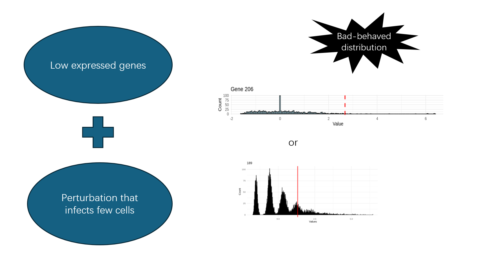
| Version | Author | Date |
|---|---|---|
| ffdc615 | jliucx | 2025-05-29 |
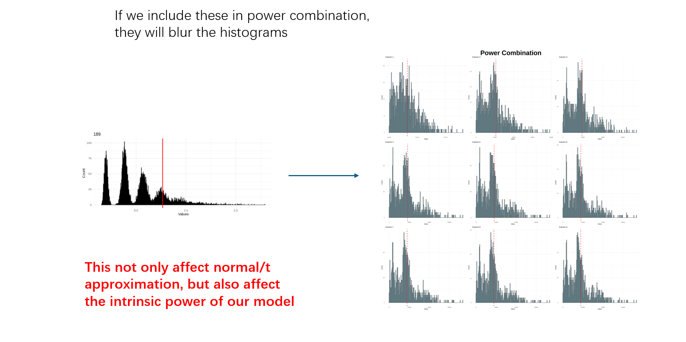
| Version | Author | Date |
|---|---|---|
| ffdc615 | jliucx | 2025-05-29 |
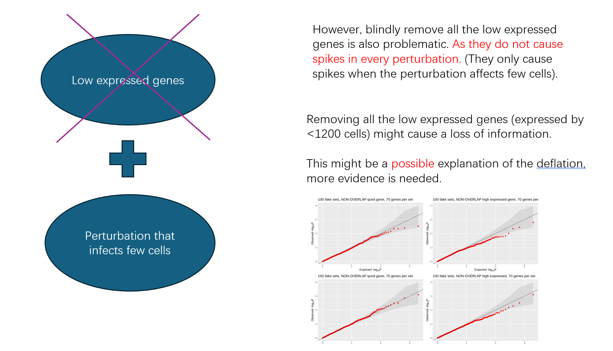
| Version | Author | Date |
|---|---|---|
| ffdc615 | jliucx | 2025-05-29 |
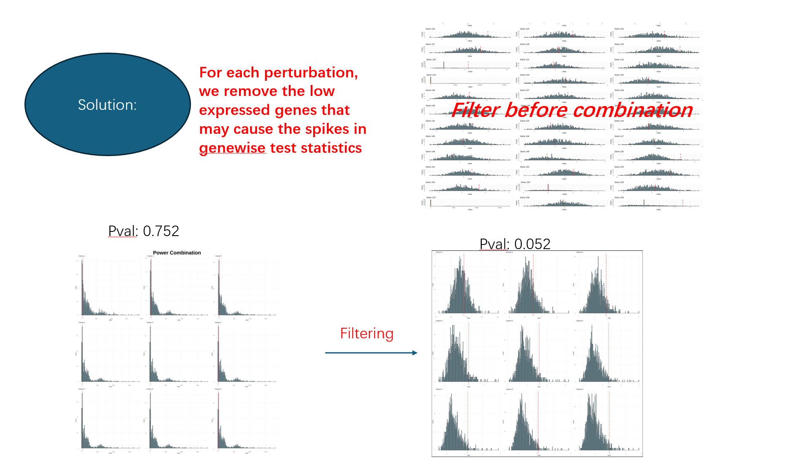
| Version | Author | Date |
|---|---|---|
| ffdc615 | jliucx | 2025-05-29 |
gene_module_index_matrix <- readRDS("/project/xuanyao/jiaming/Getting_started/data/Morris/program_data_nature_cNMF/gene_module_index_matrix.rds")
grna_target_data_frame_omit <- readRDS("/project/xuanyao/jiaming/Getting_started/data/Morris_adjusted/program_data/grna_target_data_frame_omit.rds")
discovery_pairs_cis <- readRDS("/project/xuanyao/jiaming/Getting_started/data/Morris_adjusted/program_data/discovery_pairs_cis.rds")
max_stat <- read.csv("/project/xuanyao/jiaming/Getting_started/output/Morris/remove_cis_match_grna/4_cov_high_expressed_gene/cNMF_10000_wilcox_no_approx_sceptre_perturbation_gene_remove_with_bug/resample_normal_test_statistics.csv",row.names = 1)
sceptre <- rbind(readRDS("/project/xuanyao/jiaming/Getting_started/output/Morris/sceptre_all_pairs/author_threshold_updated/results_run_discovery_analysis.rds")[,c(1,2,7)],
readRDS("/project/xuanyao/jiaming/Getting_started/output/Morris/sceptre_all_pairs/author_threshold_updated/results_run_calibration_check.rds")[,c(1,2,7)]
) normalized_test_tensor <- test_normalizer_rcpp(tensor)
combined_test_tensor <- combine_test_statistics_tensor_low_RAM(normalized_test_tensor, module_index_mat)
max_statistics <- (-(min_p_val_fast_low_ram(-test_normalizer(combined_test_tensor), module_index_mat)))
Attaching package: 'matrixStats'The following object is masked from 'package:dplyr':
count precompute_p[[length(precompute_p)+1]] <- compute_final_p_val(max_statistics, 1000,1)
p_vec<-compute_final_p_val(tensor, 1000,3)
acat_p[[length(acat_p)+1]]<-combination.test(p_vec,weights = NA,method = "Cauchy",tail.idx = 1)Warning: Using `size` aesthetic for lines was deprecated in ggplot2 3.4.0.
ℹ Please use `linewidth` instead.
This warning is displayed once every 8 hours.
Call `lifecycle::last_lifecycle_warnings()` to see where this warning was
generated.gridExtra::grid.arrange(
grobs = plot_list,
ncol = 3,
top = grid::textGrob("Power Combination: Before filtering", gp = grid::gpar(fontsize = 45, fontface = "bold"))
)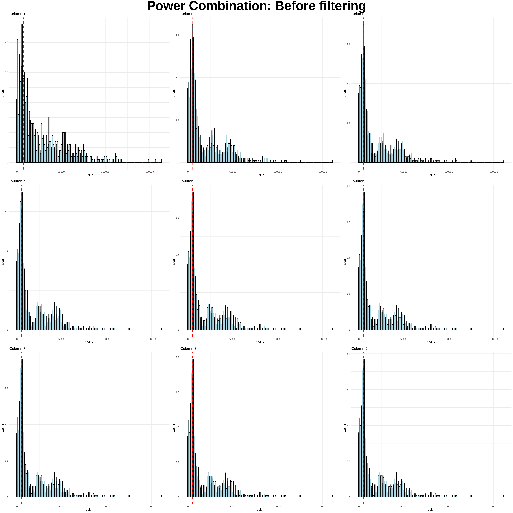
mat<-mat[,-c(11,15,18,20,22,24,36,56,59,67,68,75,77,78,85,86,98,110,130,133,140,155,157,159,163,173,178,192,195,206,215,259,260)]gridExtra::grid.arrange(
grobs = plot_list,
ncol = 3,
top = grid::textGrob("Power Combination: After filtering", gp = grid::gpar(fontsize = 45, fontface = "bold"))
)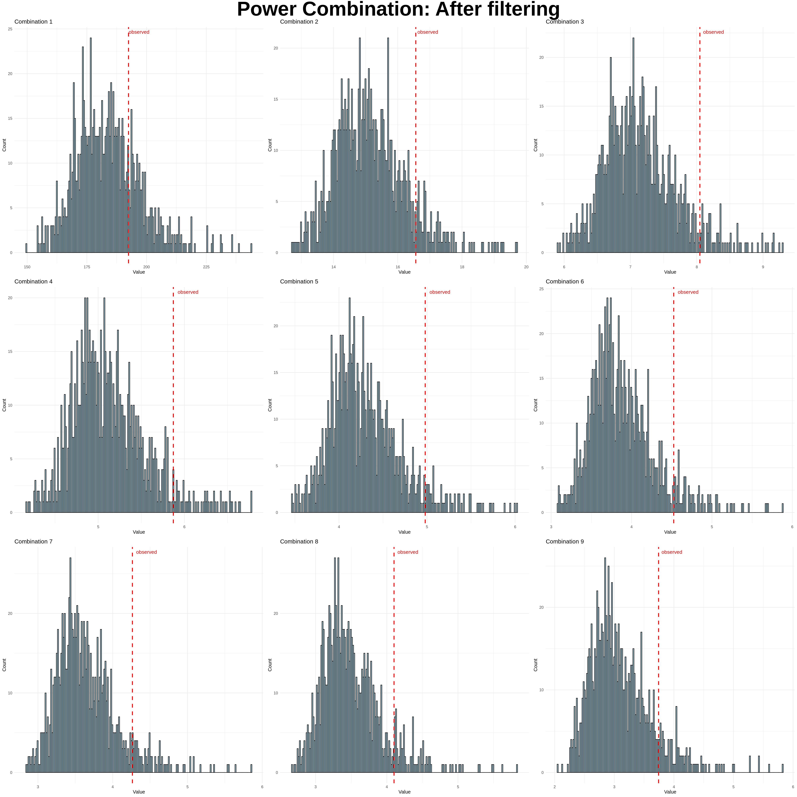
pre_vals <- sapply(precompute_p, function(x) as.numeric(x))
acat_vals <- sapply(acat_p, function(x) as.numeric(x))
df <- data.frame(
Power_combination = pre_vals,
ACAT_combination = acat_vals
)
rownames(df)<-c("before_filter","after_filter")
print(df) Power_combination ACAT_combination
before_filter 0.711 0.09210733
after_filter 0.102 0.08364728gridExtra::grid.arrange(
grobs = plot_list,
ncol = 3,
top = grid::textGrob("Power Combination: Before filtering", gp = grid::gpar(fontsize = 45, fontface = "bold"))
)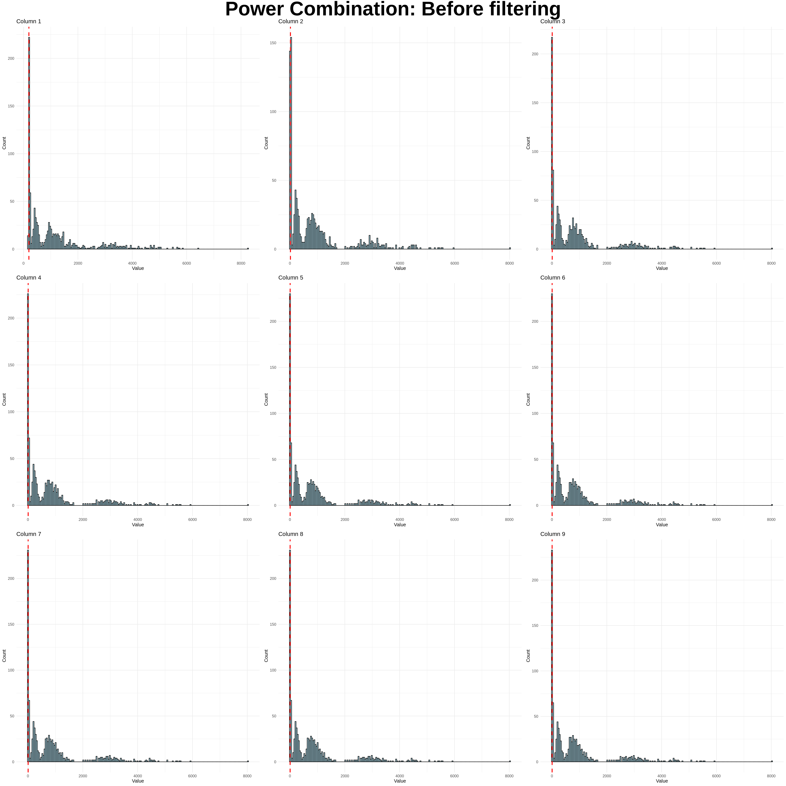
mat<-mat[,-c(8,9,11,16,20,44,58,60,62,70,72,74,87,89,105,115,132,133,136,151,161,166,199,202,203,213,215,222,225,234,242,243)]gridExtra::grid.arrange(
grobs = plot_list,
ncol = 3,
top = grid::textGrob("Power Combination: After filtering", gp = grid::gpar(fontsize = 45, fontface = "bold"))
)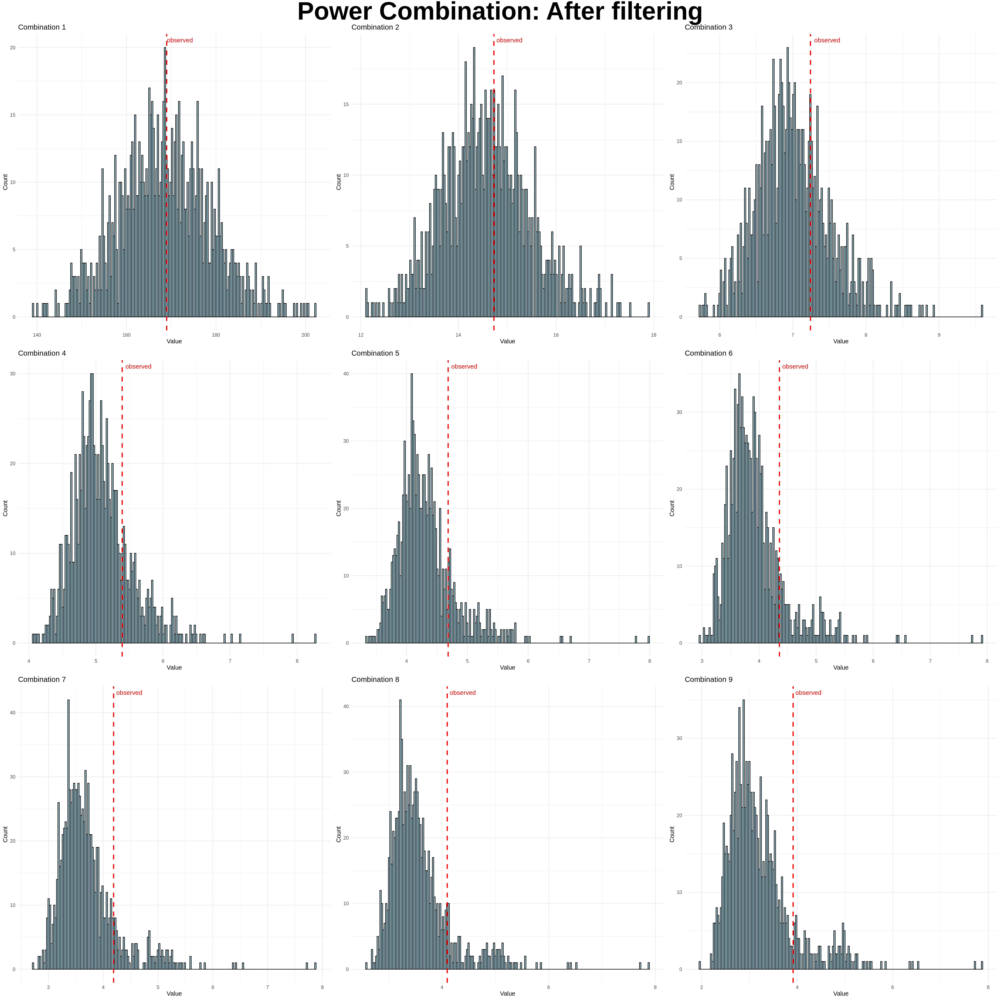
pre_vals <- sapply(precompute_p, function(x) as.numeric(x))
acat_vals <- sapply(acat_p, function(x) as.numeric(x))
df <- data.frame(
Power_combination = pre_vals,
ACAT_combination = acat_vals
)
rownames(df)<-c("before_filter","after_filter")
print(df) Power_combination ACAT_combination
before_filter 0.943 0.1461409
after_filter 0.166 0.1296153gridExtra::grid.arrange(
grobs = plot_list,
ncol = 3,
top = grid::textGrob("Power Combination: Before filtering", gp = grid::gpar(fontsize = 45, fontface = "bold"))
)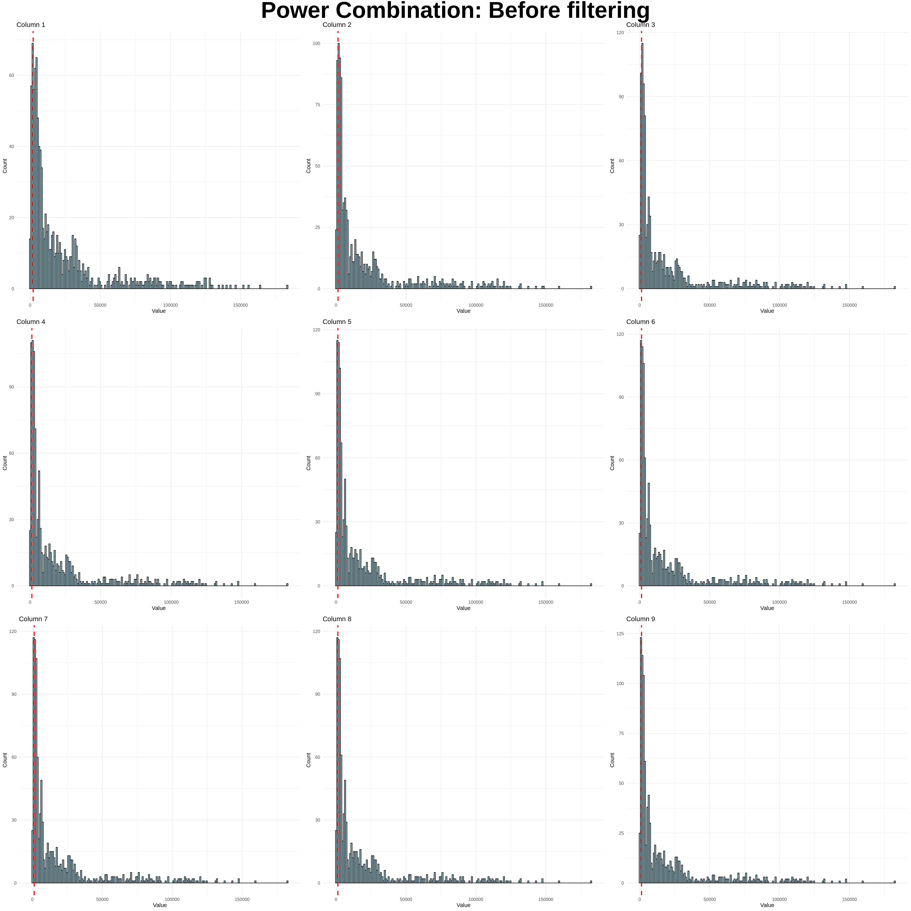
mat<-mat[,-c(3,10,11,15,16,18,24,35,36,43,44,46,52,55,56,61,63,65,74,83,85,87,89,91,98,99,101,103,108,109,117,119,122,132,133,146,148,152,165,173,174,176,181,183,195,196,201)]gridExtra::grid.arrange(
grobs = plot_list,
ncol = 3,
top = grid::textGrob("Power Combination: After filtering", gp = grid::gpar(fontsize = 45, fontface = "bold"))
)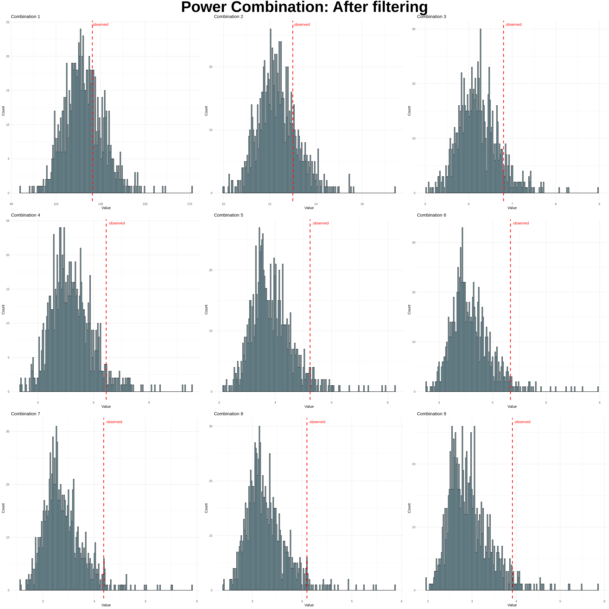
pre_vals <- sapply(precompute_p, function(x) as.numeric(x))
acat_vals <- sapply(acat_p, function(x) as.numeric(x))
df <- data.frame(
Power_combination = pre_vals,
ACAT_combination = acat_vals
)
rownames(df)<-c("before_filter","after_filter")
print(df) Power_combination ACAT_combination
before_filter 0.891 0.1171707
after_filter 0.052 0.1015384gridExtra::grid.arrange(
grobs = plot_list,
ncol = 3,
top = grid::textGrob("Power Combination: Before filtering", gp = grid::gpar(fontsize = 45, fontface = "bold"))
)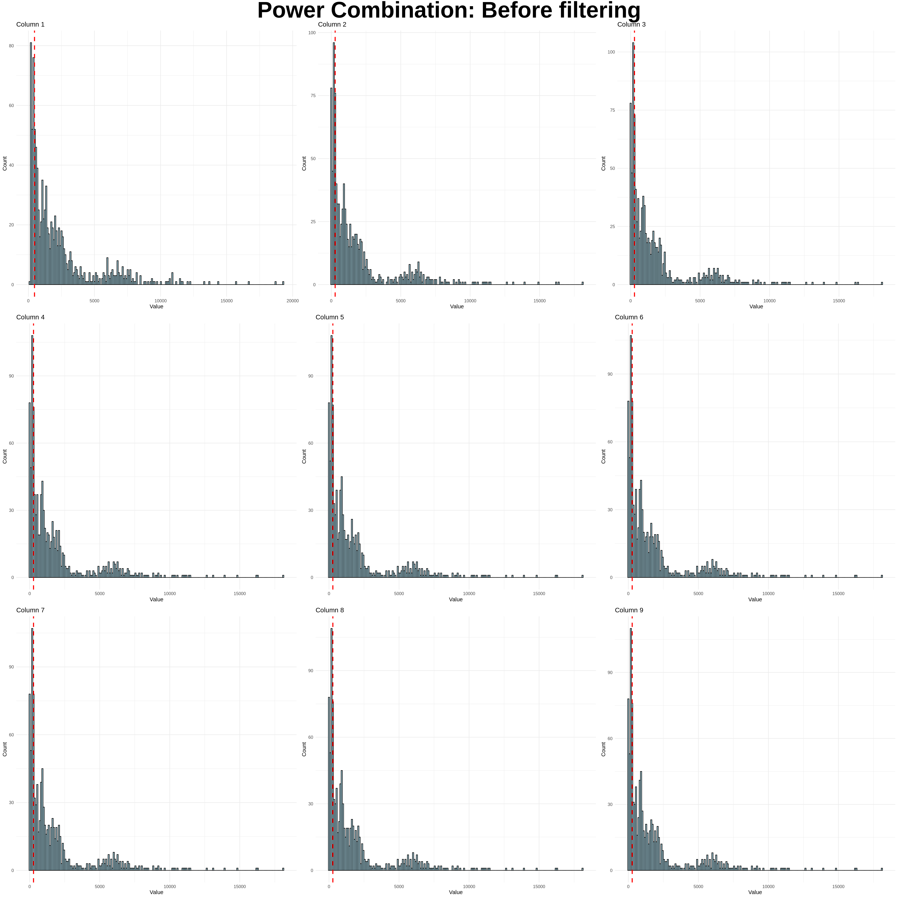
mat<-mat[,-c(3,16,22,27,36,39,41,50,53,54,74,76,90,93,102,105,106,113,119,126,129,137,141,142,162,166,183,200,203,205,213,214)]gridExtra::grid.arrange(
grobs = plot_list,
ncol = 3,
top = grid::textGrob("Power Combination: After filtering", gp = grid::gpar(fontsize = 45, fontface = "bold"))
)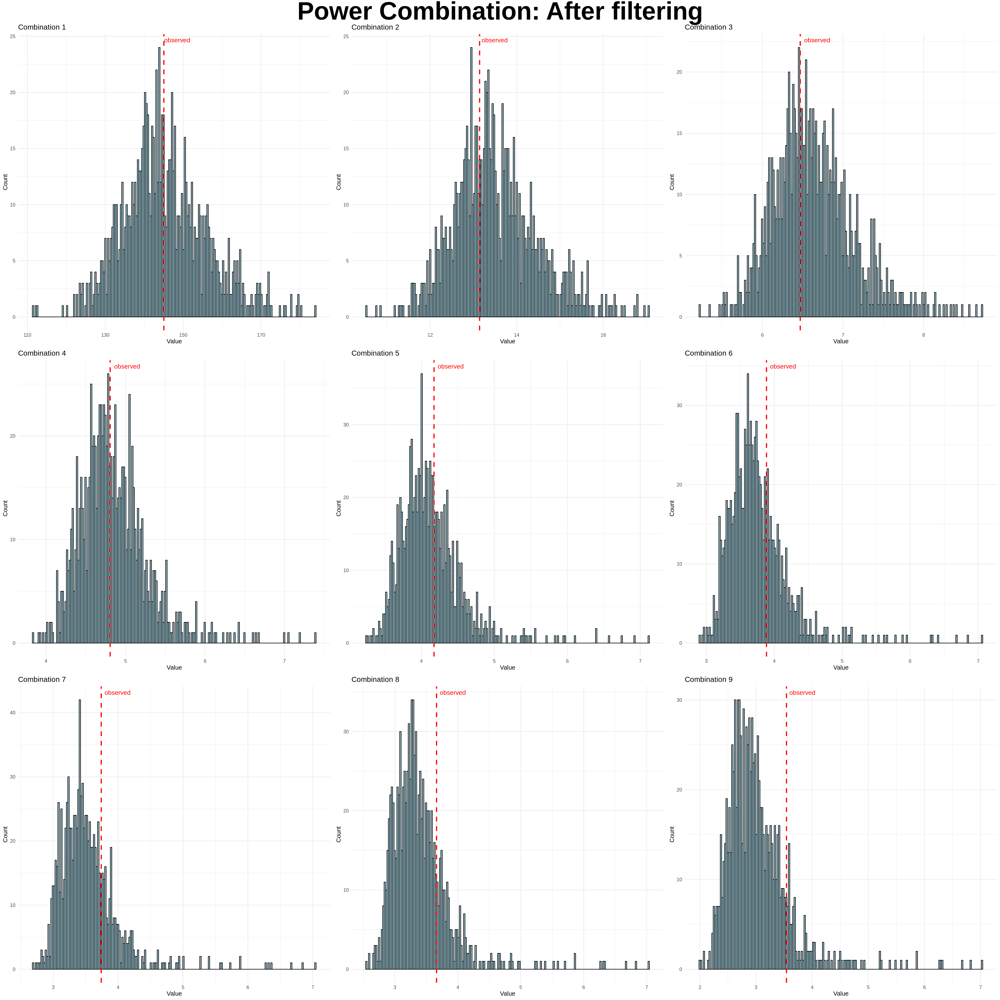
pre_vals <- sapply(precompute_p, function(x) as.numeric(x))
acat_vals <- sapply(acat_p, function(x) as.numeric(x))
df <- data.frame(
Power_combination = pre_vals,
ACAT_combination = acat_vals
)
rownames(df)<-c("before_filter","after_filter")
print(df) Power_combination ACAT_combination
before_filter 0.752 0.1869069
after_filter 0.229 0.1698762gridExtra::grid.arrange(
grobs = plot_list,
ncol = 3,
top = grid::textGrob("Power Combination: Before filtering", gp = grid::gpar(fontsize = 45, fontface = "bold"))
)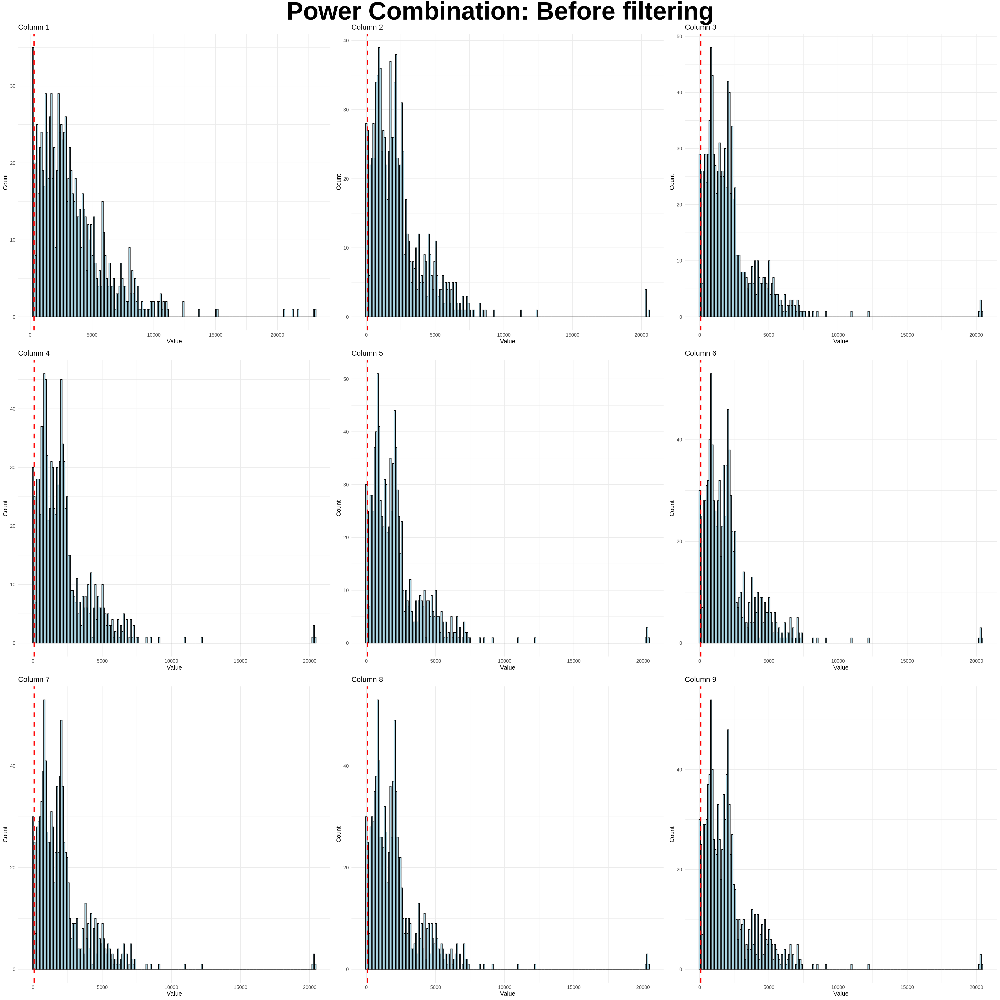
mat<-mat[,-c(4,5,11,17,43,44,54,58,63,66,74,85,86,132,167,173,178,210,221,234,256,258,260,267)]gridExtra::grid.arrange(
grobs = plot_list,
ncol = 3,
top = grid::textGrob("Power Combination: After filtering", gp = grid::gpar(fontsize = 45, fontface = "bold"))
)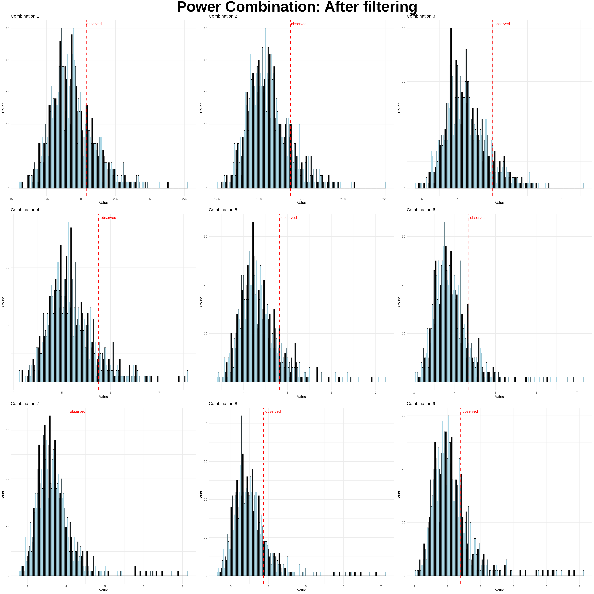
pre_vals <- sapply(precompute_p, function(x) as.numeric(x))
acat_vals <- sapply(acat_p, function(x) as.numeric(x))
df <- data.frame(
Power_combination = pre_vals,
ACAT_combination = acat_vals
)
rownames(df)<-c("before_filter","after_filter")
print(df) Power_combination ACAT_combination
before_filter 0.961 0.09270302
after_filter 0.195 0.08495617gridExtra::grid.arrange(
grobs = plot_list,
ncol = 3,
top = grid::textGrob("Power Combination: Before filtering", gp = grid::gpar(fontsize = 45, fontface = "bold"))
)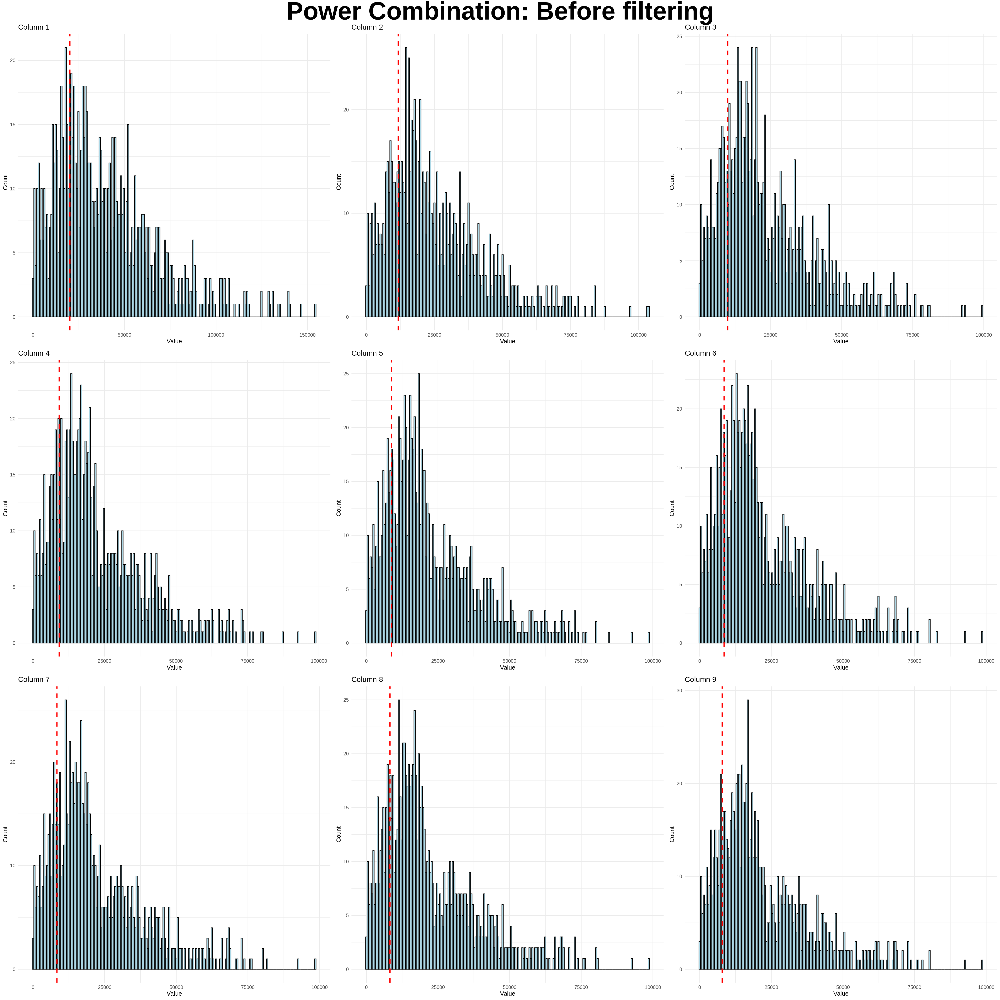
mat <- mat[,-c(4,8,10,15,34,50,52,63,81,104,105,122,124,125,130,136,140,141,162,170,174,175,176,181,183,195,196,199,202,205,208,211,212,213,222,224,227,234,235,236,237,242,243,244)]gridExtra::grid.arrange(
grobs = plot_list,
ncol = 3,
top = grid::textGrob("Power Combination: After filtering", gp = grid::gpar(fontsize = 45, fontface = "bold"))
)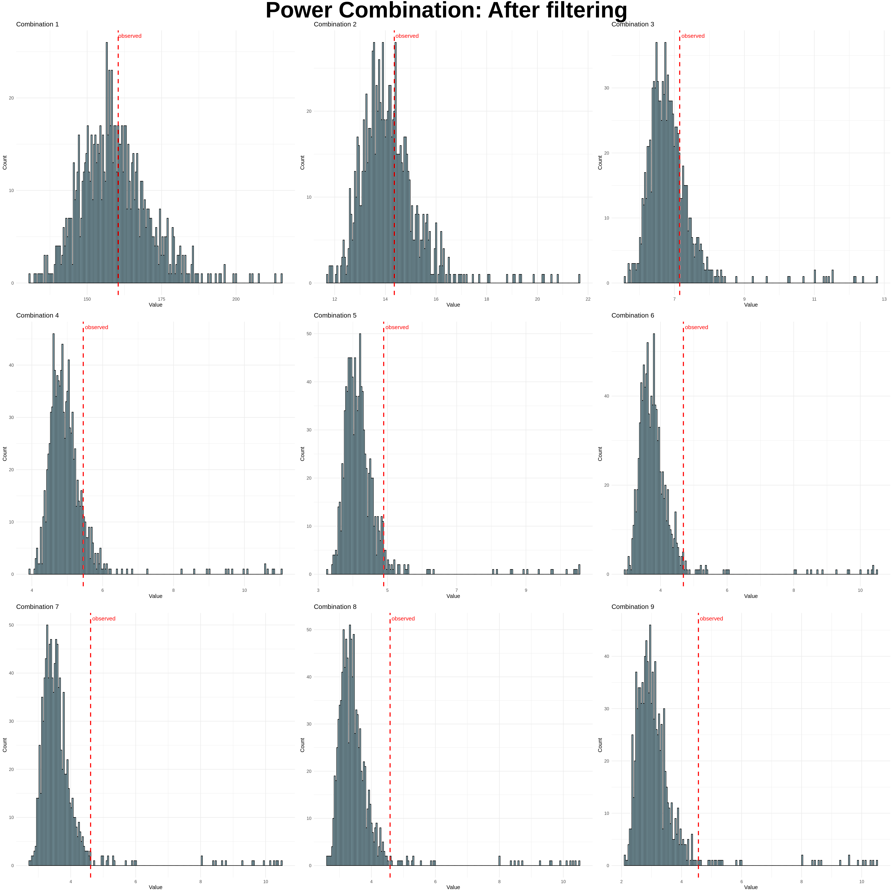
pre_vals <- sapply(precompute_p, function(x) as.numeric(x))
acat_vals <- sapply(acat_p, function(x) as.numeric(x))
df <- data.frame(
Power_combination = pre_vals,
ACAT_combination = acat_vals
)
rownames(df)<-c("before_filter","after_filter")
print(df) Power_combination ACAT_combination
before_filter 0.792 0.1737617
after_filter 0.032 0.1650834gridExtra::grid.arrange(
grobs = plot_list,
ncol = 3,
top = grid::textGrob("Power Combination: Before filtering", gp = grid::gpar(fontsize = 45, fontface = "bold"))
)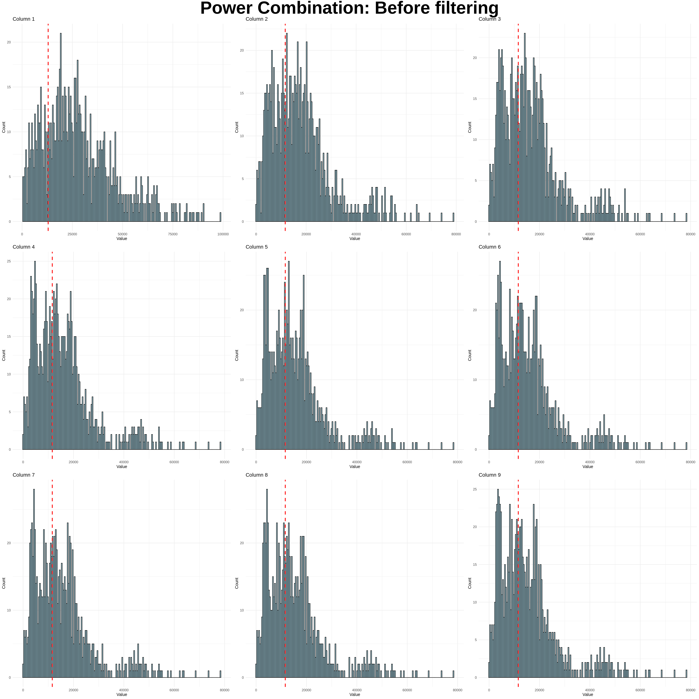
mat<-mat[,-c(3,21,28,30,42,43,48,49,50,56,64,73,79,87,94,100,108,109,110,116,126,124,128,129,130,135,139,145,146,158,164,171,182,189,190,203,204,211,220,225,233,235,236)]gridExtra::grid.arrange(
grobs = plot_list,
ncol = 3,
top = grid::textGrob("Power Combination: After filtering", gp = grid::gpar(fontsize = 45, fontface = "bold"))
)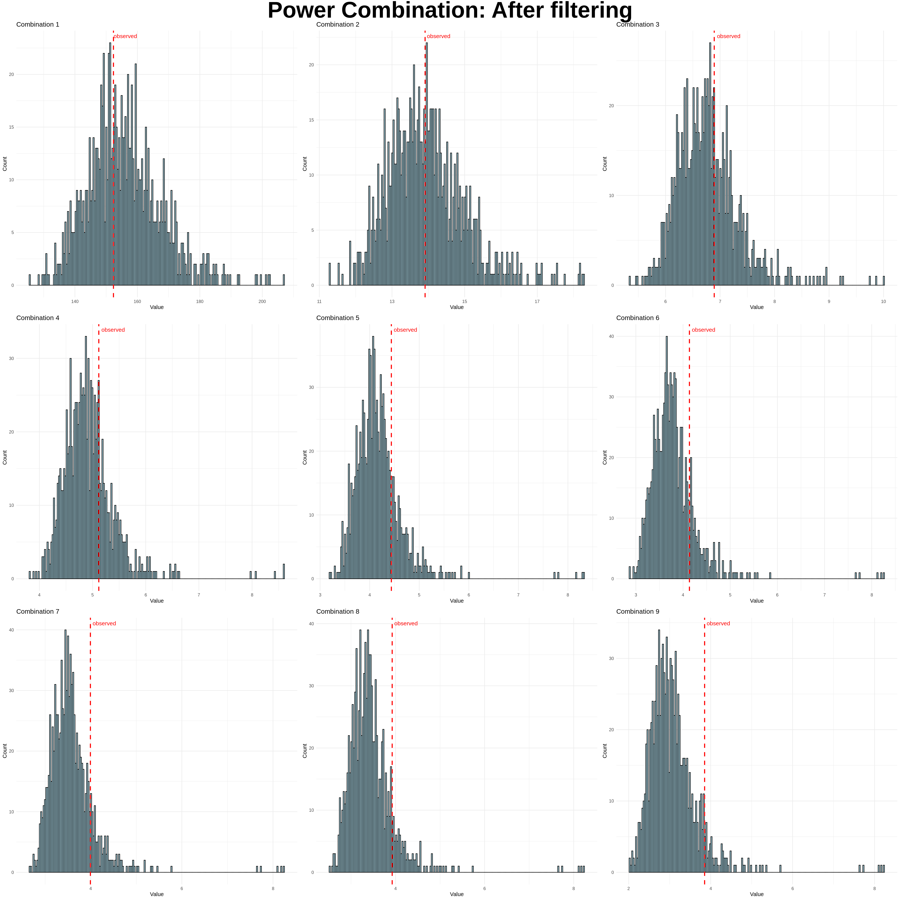
pre_vals <- sapply(precompute_p, function(x) as.numeric(x))
acat_vals <- sapply(acat_p, function(x) as.numeric(x))
df <- data.frame(
Power_combination = pre_vals,
ACAT_combination = acat_vals
)
rownames(df)<-c("before_filter","after_filter")
print(df) Power_combination ACAT_combination
before_filter 0.633 0.1803437
after_filter 0.113 0.1515298gridExtra::grid.arrange(
grobs = plot_list,
ncol = 3,
top = grid::textGrob("Power Combination: Before filtering", gp = grid::gpar(fontsize = 45, fontface = "bold"))
)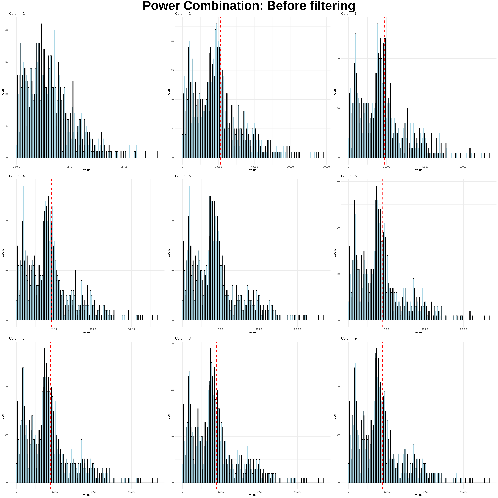
mat<-mat[,-c(2,3,6,7,9,12,13,14,16,22,24,28,33,34,38,45,48,61,63,64,67,68,69,73,75,77,78,84,86,88,90,92,94,95,100,105,106,110,114,115,120,122,125,130,131,135,145,149,151,155,159,160,167,171,173,176,180,181,183)]gridExtra::grid.arrange(
grobs = plot_list,
ncol = 3,
top = grid::textGrob("Power Combination: After filtering", gp = grid::gpar(fontsize = 45, fontface = "bold"))
)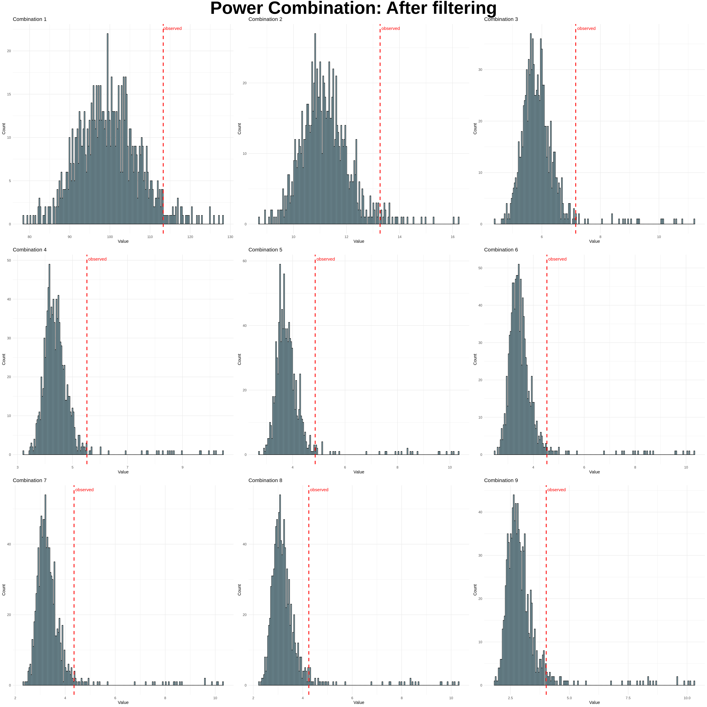
pre_vals <- sapply(precompute_p, function(x) as.numeric(x))
acat_vals <- sapply(acat_p, function(x) as.numeric(x))
df <- data.frame(
Power_combination = pre_vals,
ACAT_combination = acat_vals
)
rownames(df)<-c("before_filter","after_filter")
print(df) Power_combination ACAT_combination
before_filter 0.480 0.09501150
after_filter 0.042 0.07203392Due to the time constraint, I haven’t studied the cutoff of perturbation-gene filter, now the current filter to obtain this result still include many spikes in genewise null distribution. But there is a clear improvement on the performance.
gene_module_index_matrix <- readRDS("/project/xuanyao/jiaming/Getting_started/data/Morris/program_data_nature_cNMF/gene_module_index_matrix.rds")
grna_target_data_frame_omit <- readRDS("/project/xuanyao/jiaming/Getting_started/data/Morris_adjusted/program_data/grna_target_data_frame_omit.rds")
discovery_pairs_cis <- readRDS("/project/xuanyao/jiaming/Getting_started/data/Morris_adjusted/program_data/discovery_pairs_cis.rds")
max_stat <- read.csv("/project/xuanyao/jiaming/Getting_started/output/Morris/remove_cis_match_grna/4_cov_high_expressed_gene/cNMF_10000_wilcox_no_approx_sceptre_perturbation_gene_remove_/resample_normal_test_statistics.csv",row.names = 1)
sceptre <- rbind(readRDS("/project/xuanyao/jiaming/Getting_started/output/Morris/sceptre_all_pairs/author_threshold_updated/results_run_discovery_analysis.rds")[,c(1,2,7)],
readRDS("/project/xuanyao/jiaming/Getting_started/output/Morris/sceptre_all_pairs/author_threshold_updated/results_run_calibration_check.rds")[,c(1,2,7)]
)
sceptre <- sceptre[!is.na(sceptre$p_value), ]
sceptre$p_value[sceptre$p_value == 1] <- 1 - 1e-6
sceptre_wide <- sceptre %>%
pivot_wider(names_from = response_id, values_from = p_value) %>%
as.data.frame()
# Set the row names to be the grna_id and remove the grna_id column
rownames(sceptre_wide) <- sceptre_wide$grna_id
sceptre_wide <- sceptre_wide[, -1]
sceptre_wide <- sceptre_wide[rownames(max_stat)[rownames(max_stat) %in% rownames(sceptre_wide)], ]
sceptre_wide <- sceptre_wide[, rownames(gene_module_index_matrix), drop = FALSE]
# sceptre_wide <- sceptre_wide[rowSums(grna_assignment_matrix_author_threshold[rownames(sceptre_wide),])>100,]
library(eulerr)
module_results <- list()
# Iterate over each row of t_gene_p_no_approximation to compute ACAT p-values for each module
for (i in seq_len(nrow(sceptre_wide))) {
grna_id <- rownames(sceptre_wide)[i]
p_values_row <- sceptre_wide[i,]
# Initialize an empty list to store ACAT p-values and module names for each module
module_acat_pvals <- c()
module_names <- c()
matched_targets <- grna_target_data_frame_omit[grna_target_data_frame_omit$grna_id %in% grna_id, ]$grna_target
cis_genes <- discovery_pairs_cis[discovery_pairs_cis$grna_target == matched_targets, ]$response_id
# Iterate over each module in gene_modules to combine p-values using ACAT
for (j in 1:ncol(gene_module_index_matrix)) {
module_name <- colnames(gene_module_index_matrix)[j] # Get the module name
module_genes <- rownames(gene_module_index_matrix)[gene_module_index_matrix[, j] == 1]
module_genes <- intersect(module_genes, colnames(p_values_row))
module_genes <- setdiff(module_genes, cis_genes)
# Only apply ACAT if there are genes to combine and they are not NA
if (length(module_genes) > 0) {
module_p_values <- as.numeric(p_values_row[module_genes])
module_p_values <- module_p_values[!is.na(module_p_values)] # Remove NAs
if (length(module_p_values) > 0) {
# acat_pval <- ACAT(module_p_values)
acat_pval <- combination.test(
module_p_values[!is.na(module_p_values)],
weights = NA,
method = "Cauchy",
tail.idx = 1
)
module_acat_pvals <- c(module_acat_pvals, acat_pval)
module_names <- c(module_names, module_name)
} else {
module_acat_pvals <- c(module_acat_pvals, NA)
module_names <- c(module_names, module_name)
}
} else {
module_acat_pvals <- c(module_acat_pvals, NA)
module_names <- c(module_names, module_name)
}
}
# Store results as a data frame in the list
module_results[[i]] <- data.frame(
grna_id = grna_id,
module = module_names,
acat_pval = module_acat_pvals
)
}
# Combine all results into a single data frame
module_results_sceptre <- do.call(rbind, module_results)
module_results_sceptre <- module_results_sceptre[!is.na(module_results_sceptre$acat_pval), ]
library(tibble)
max_stat_long <- max_stat%>%
rownames_to_column(var = "grna_id") %>% # Add row names as a column
pivot_longer(cols = -grna_id, names_to = "module", values_to = "p_value")
# Remove rows with NA p-values
max_stat_long <- max_stat_long %>% filter(!is.na(p_value))
max_stat_long <- max_stat_long %>%
semi_join(module_results_sceptre, by = c("grna_id", "module"))
module_results_sceptre$bh_pval <- p.adjust(module_results_sceptre$acat_pval, method = "BH")
module_results_sceptre$identifier <- paste(module_results_sceptre$grna_id, module_results_sceptre$module, sep = "_")
max_stat_long$bh_pval <- p.adjust(max_stat_long$p_value, method = "BH")
max_stat_long$identifier <- paste(max_stat_long$grna_id, max_stat_long$module, sep = "_")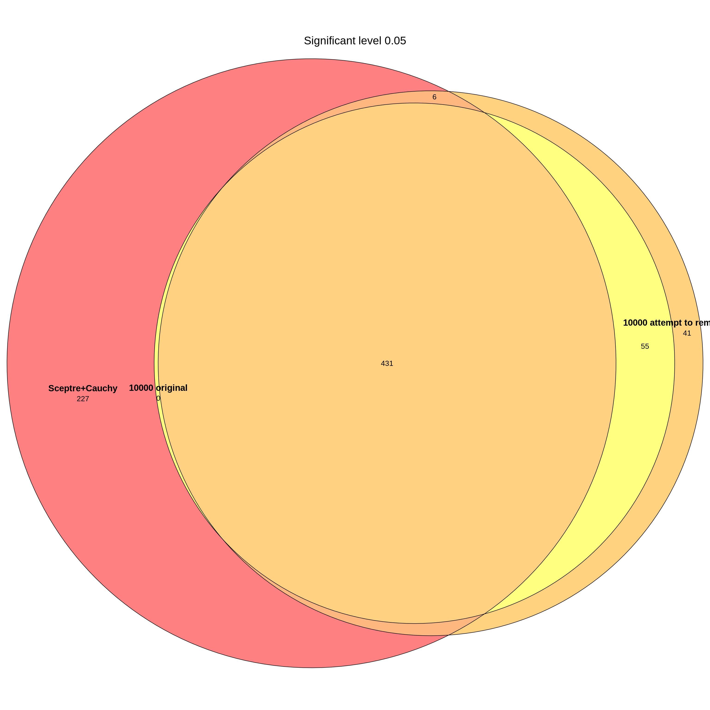
plot(-log10(as.vector(as.matrix(read.csv("/project/xuanyao/jiaming/Getting_started/output/Morris/remove_cis_match_grna/4_cov_high_expressed_gene/cNMF_10000_wilcox_no_approx_sceptre_perturbation_gene_remove_/resample_normal_test_statistics.csv",row.names = 1)))),-log10(as.vector(as.matrix(read.csv("/project/xuanyao/jiaming/Getting_started/output/Morris/remove_cis_match_grna/4_cov_high_expressed_gene/cNMF_10000_wilcox_no_approx_sceptre_perturbation_gene_remove_with_bug/resample_normal_test_statistics.csv",row.names = 1)))),xlab="remove spike",ylab="keep spike",main="Scatter plot of p value")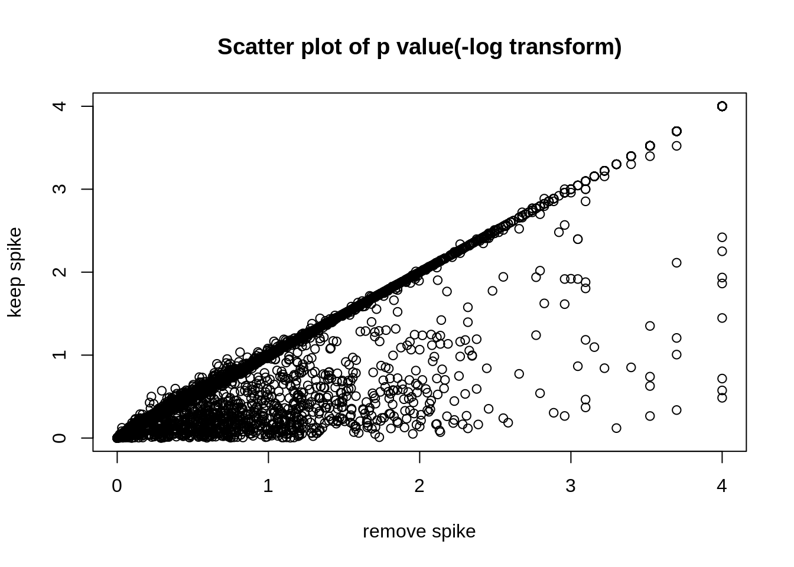
Many pair that are not significant if keep spikes, are marked as significant if removing spikes.
sessionInfo()R version 4.1.0 (2021-05-18)
Platform: x86_64-pc-linux-gnu (64-bit)
Running under: CentOS Linux 8
Matrix products: default
BLAS/LAPACK: /software/openblas-0.3.13-el8-x86_64/lib/libopenblas_skylakexp-r0.3.13.so
locale:
[1] LC_CTYPE=en_US.UTF-8 LC_NUMERIC=C LC_TIME=C
[4] LC_COLLATE=C LC_MONETARY=C LC_MESSAGES=C
[7] LC_PAPER=C LC_NAME=C LC_ADDRESS=C
[10] LC_TELEPHONE=C LC_MEASUREMENT=C LC_IDENTIFICATION=C
attached base packages:
[1] parallel stats graphics grDevices utils datasets methods
[8] base
other attached packages:
[1] matrixStats_1.1.0 speedglm_0.3-5 biglm_0.9-3
[4] DBI_1.2.3 MASS_7.3-60 ACAT_0.91
[7] eulerr_7.0.2 gridExtra_2.3 heavytailcombtest_1.0.0
[10] sgt_2.0 numDeriv_2016.8-1.1 optimx_2024-12.2
[13] peakRAM_1.0.2 BH_1.84.0-0 Matrix_1.6-3
[16] sceptredata_0.99.0 sceptre_0.10.0 presto_1.0.0
[19] data.table_1.14.8 Rcpp_1.0.12 tidyr_1.3.0
[22] tibble_3.2.1 readr_1.4.0 dplyr_1.1.4
[25] ggplot2_3.5.1 workflowr_1.7.1
loaded via a namespace (and not attached):
[1] httr_1.4.2 sass_0.4.9 jsonlite_1.8.7 bslib_0.7.0
[5] getPass_0.2-2 highr_0.11 yaml_2.2.1 pillar_1.9.0
[9] lattice_0.22-5 glue_1.6.2 rmutil_1.1.10 digest_0.6.33
[13] polyclip_1.10-6 promises_1.2.0.1 colorspace_2.1-0 htmltools_0.5.8.1
[17] httpuv_1.6.1 pkgconfig_2.0.3 invgamma_1.1 purrr_1.0.2
[21] mvtnorm_1.3-3 scales_1.3.0 processx_3.8.4 whisker_0.4.1
[25] later_1.2.0 pracma_2.4.4 git2r_0.32.0 farver_2.1.1
[29] generics_0.1.3 ellipsis_0.3.2 cachem_1.0.8 withr_2.5.2
[33] cli_3.6.1 magrittr_2.0.3 crayon_1.5.2 evaluate_0.23
[37] ps_1.7.5 fs_1.6.3 fansi_1.0.5 tools_4.1.0
[41] hms_1.1.0 lifecycle_1.0.4 stringr_1.5.1 munsell_0.5.0
[45] callr_3.7.6 compiler_4.1.0 jquerylib_0.1.4 rlang_1.1.2
[49] grid_4.1.0 nloptr_1.2.2.2 rstudioapi_0.15.0 labeling_0.4.3
[53] rmarkdown_2.27 gtable_0.3.0 R6_2.5.1 knitr_1.48
[57] fastmap_1.1.1 utf8_1.2.1 rprojroot_2.0.4 polylabelr_0.3.0
[61] stringi_1.6.2 vctrs_0.6.4 tidyselect_1.2.0 xfun_0.51